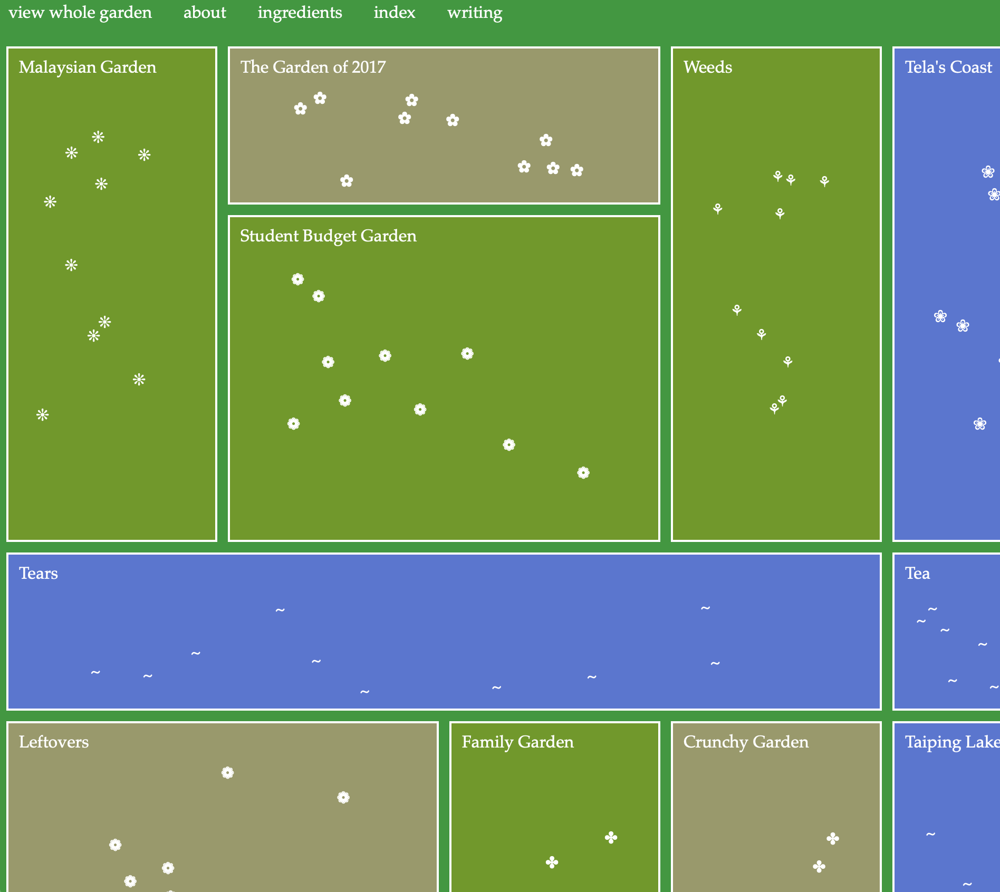

gardenblues
푸른색과 초록색의 직사각형들을 블록처럼 배치해두었다. 각 직사각형 안에는 물결처럼 보이는 오브젝트와 꽃 오브젝트가 포함되어있어 마치 정원을 연상시킨다. 웹사이트 최상단에는 네비게이션이 고정되어있어 이동하기 편리하다.
물결 모양이나 꽃 모양을 클릭하면 레시피가 적혀있는 창으로 이동한다. 각각의 웹페이지에는 음식을 만들기 위한 재료나 방법 등이 적혀져있다. 사이트가 전체적으로 초록색으로 이루어져 있어 눈이 편안하고 자연친화적인 느낌을 준다.
모바일 화면 사이즈로 축소시켰을 때의 사진이다. 화면 크기에 따라 블록들이 아래로 내려간다거나 화면 구성 자체가 바뀌지는 않고 단순히 화면이 잘리게 된다는 점은 아쉽다. 다른 화면을 클릭하기 위해서는 화면을 옆으로 스크롤하여 이동해야한다.